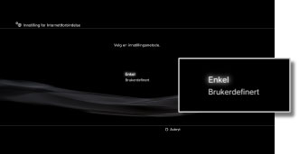

Innstillinger > Nettverksinnstilling > Innstilling for Internettforbindelse (kabel forbindelse)
Innstilling for Internettforbindelse (kabel forbindelse)
Angi metoden for å koble til Internett. Når du oppretter en trådet tilkobling med en Ethernet-kabel, og du følger instruksjonene på skjermen, vil typiske innstillinger automatisk velges.
Nettverksinnstillingene varierer avhengig av nettverksmiljøet og enhetene du bruker. Følgende fremgangsmåte beskriverer et typisk oppsett når du oppretter en trådet tilkobling til Internett med en Ethernet-kabel.
1. |
Koble en Ethernet-kabel til PS3™-systemet. |
|---|---|
2. |
Velg |
3. |
Velg [Innstilling for Internettforbindelse]. |
4. |
Velg [Enkel].  Etter at du bekrefter nettverkskonfigurasjonen, vises en liste over innstillinger. |
5. |
Lagre innstillingene. |
6. |
Test tilkoblingen. |
7. |
Bekreft testresultatene for tilkoblingen. |
 (Innstillinger) > (Nettverksinnstilling).
(Innstillinger) > (Nettverksinnstilling).Tips
Hvis tilkoblingen mislyktes, følg instruksjonene på skjermen for å kontrollere innstillingene dine. Se også informasjonen fra Internettleverandøren din eller instruksjonene som fulgte med nettverksenheten.